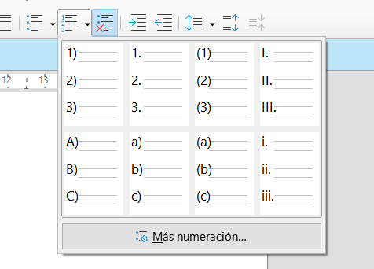
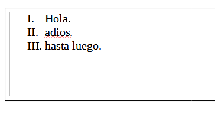

Tecnicas PDF
5 técnicas PDF:
1 Proporcionar encabezados y pies de página en ejecución en documentos PDF.
El objetivo de esta técnica es ayudar a los usuarios a situarse con un numero de pagina en el pie de pagina y en el encabezado la fecha y un nombre.
2 Uso de etiquetas de lista para listas en documentos PDF.
La intención de esta técnica es crear listas de elementos relacionados utilizando elementos de lista apropiados para sus propósitos.
 Para relacionar la lista utilizo un marco.
3 Establecer el idioma predeterminado mediante la entrada / Lang en el catálogo de documentos de un documento PDF.
El objetivo de esta técnica es especificar el idioma predeterminado de un documento estableciendo la entrada / Lang en el catálogo de documentos.